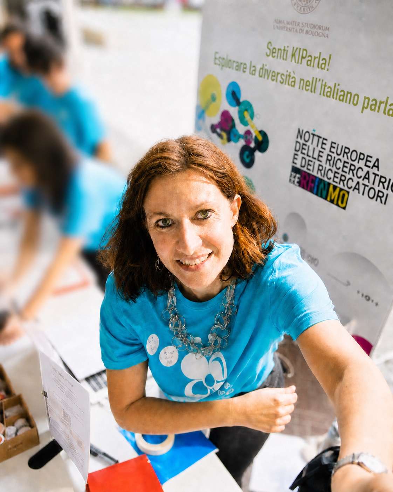

How do grammatical patterns emerge, stabilise and change through use and interaction?
I study spoken language as cooperative action, examining how grammatical organisation emerges from recurrent practices in interaction.

Linguist · University of Bologna
My University of Bologna profile provides the institutional record of my academic work. This website complements it by organising projects, publications, resources, and activities around the questions that connect them, making the different parts of my work easier to navigate.
Research
My work develops across three interconnected research directions. Individual projects and publications often contribute to more than one of them. Across all three, I ask how grammar takes shape across languages, in use and through interaction.
I study spoken language as cooperative action, examining how grammatical organisation emerges from recurrent practices in interaction.
Through linguistic typology and the study of sociolinguistic variation, I examine recurrent strategies, constraints and pathways of change in the organisation of grammar and meaning.
I examine how categories and meanings are constructed locally, reshaped by context, and negotiated as speakers manage knowledge and expectations together.
Research topics
Recurring areas of investigation represented in publications and talks include:
Research materials
My research combines spoken-language corpora, typological comparison and diachronic evidence. I develop corpora and annotations that preserve variation, document analytical choices, and make naturally occurring language data accessible for further research.